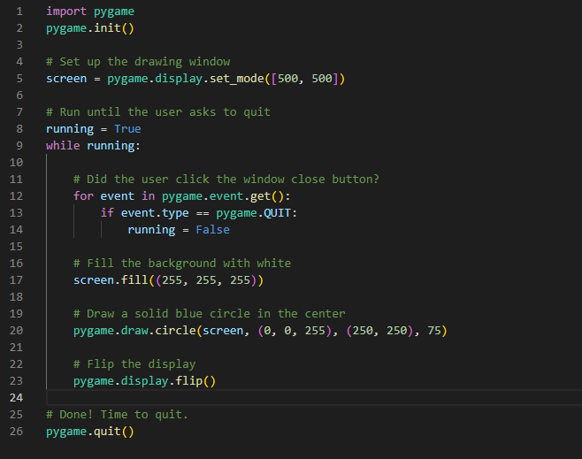
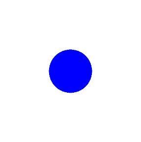

Pygame Zero
Installation
pip3 install pgzero
Basic Pygame
Before getting down to specifics, let’s take a look at a basic pygame program. This program creates a window, fills the background with white, and draws a blue circle in the middle of it:

Output

Let’s break this code down, section by section:
- Lines 4 and 5 import and initialize the pygame library. Without these lines, there is no pygame.
- Line 8 sets up your program’s display window. You provide either a list or a tuple that specifies the width and height of the window to create. This program uses a list to create a square window with 500 pixels on each side.
- Lines 11 and 12 set up a game loop to control when the program ends. You’ll cover game loops later on in this tutorial
- Lines 15 to 17 scan and handle events within the game loop. You’ll get to events a bit later as well. In this case, the only event handled is pygame.QUIT, which occurs when the user clicks the window close button.
- Line 20 fills the window with a solid color. screen.fill() accepts either a list or tuple specifying the RGB values for the color. Since (255, 255, 255) was provided, the window is filled with white.
- Line 23 draws a circle in the window, using the following parameters:
- screen: the window on which to draw
- (0, 0, 255): a tuple containing RGB color values
- (250, 250): a tuple specifying the center coordinates of the circle
- 75: the radius of the circle to draw in pixels
- Line 26 updates the contents of the display to the screen. Without this call, nothing appears in the window!
- Line 29 exits pygame. This only happens once the loop finishes.
Pygame Concept
As pygame and the SDL library are portable across different platforms and devices, they both need to define and work with abstractions for various hardware realities. Understanding those concepts and abstractions will help you design and develop your own games.
Initialization and Modules
The pygame library is composed of a number of Python constructs, which include several different modules. These modules provide abstract access to specific hardware on your system, as well as uniform methods to work with that hardware. For example, display allows uniform access to your video display, while joystick allows abstract control of your joystick.
After importing the pygame library in the example above, the first thing you did was initialize PyGame using pygame.init(). This function calls the separate init() functions of all the included pygame modules. Since these modules are abstractions for specific hardware, this initialization step is required so that you can work with the same code on Linux, Windows, and Mac.
Displays and Surfaces
In addition to the modules, pygame also includes several Python classes, which encapsulate non-hardware dependent concepts. One of these is the Surface which, at its most basic, defines a rectangular area on which you can draw. Surface objects are used in many contexts in pygame. Later you’ll see how to load an image into a Surface and display it on the screen.
In pygame, everything is viewed on a single user-created display, which can be a window or a full screen. The display is created using .set_mode(), which returns a Surface representing the visible part of the window. It is this Surface that you pass into drawing functions like pygame.draw.circle(), and the contents of that Surface are pushed to the display when you call pygame.display.flip().
Images and Rects
Your basic pygame program drew a shape directly onto the display’s Surface, but you can also work with images on the disk. The image module allows you to load and save images in a variety of popular formats. Images are loaded into Surface objects, which can then be manipulated and displayed in numerous ways.
As mentioned above, Surface objects are represented by rectangles, as are many other objects in pygame, such as images and windows. Rectangles are so heavily used that there is a special Rect class just to handle them. You’ll be using Rect objects and images in your game to draw players and enemies, and to manage collisions between them.